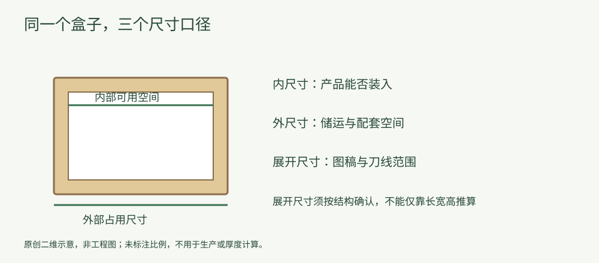

知识文章
尺寸图解：内尺寸、外尺寸与展开尺寸，别混着填
2026-10-10 · 印个泡泡
三个尺寸口径解决不同问题，询价和图稿准备时应分别确认。
“这个盒子长宽高是多少？”听起来简单，沟通时却可能指向三个不同口径。先统一口径，再记录数值，可以避免同一组数字被用于不同环节。

原创概念示意，不按比例绘制，不是工程图或实际产品照片，不用于直接生产。
内尺寸：关心能否装入
内尺寸描述内部可用空间。产品的凸起、袋口、配件或保护内衬都可能改变装入条件。量产品时要考虑实际摆放方向，不能只量主体而忽略装入后仍占空间的部件。
外尺寸：关心占用空间
外尺寸用于讨论盒子装好后的占用空间，例如外箱配套和储运摆放。材料厚度、折叠结构与装配方式可能影响内外差异，不能对所有盒型统一加一个固定数值。
展开尺寸：关心图稿范围
展开后的刀线包含多个面以及相应的连接、折叠或装配部分。它不是一个普通矩形盒的长宽高，也不能只靠产品三边尺寸推算。应使用经确认的结构文件安排图稿，而不是凭效果图自行猜测。
一个沟通示例。 可写成：“产品装入方向为竖放，尺寸单位毫米，以下数值是产品尺寸；包装内尺寸尚待确认。”这比只发一张“120×80×60”的表格更明确。此处为假设说明，不是某个真实订单。
确认清单：记录单位、口径、装入方向与测量对象；有内衬时同时说明；最后用样品核对装入和开合。具体公差由生产方按结构与工艺确认。
为你的产品，找到适合的包装。
选包装，获取报价 →